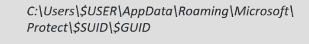
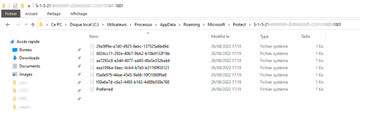
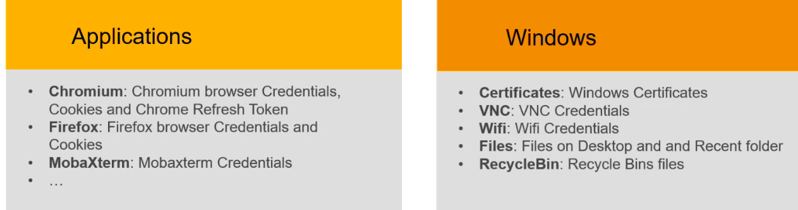
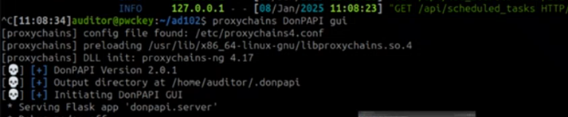
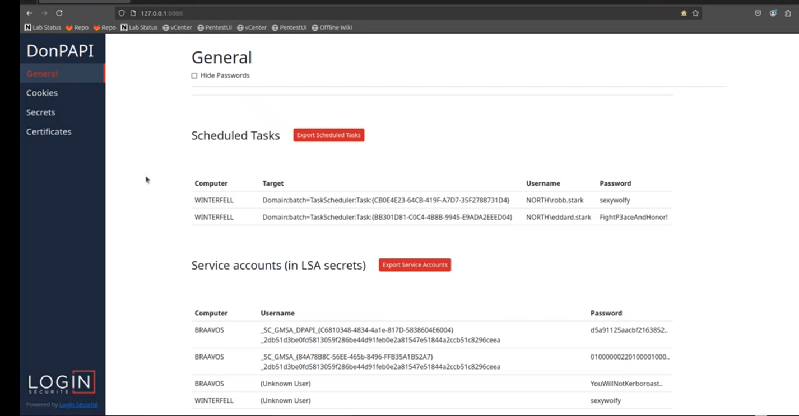

DPAPI
Intro
- DPAPI : data protection api
- permet à diverses apps de stocker des données sensibles (par exemple mdp )
- les données sont stockés sur
 et sont securisés par des clés derivés du mot de passe user


l'outil se base sur impacket probablement smbexec puis collecte une master key sur un disk puis dechifre via la clé derivé du passe de l(utilsateur puis utiliser la master key pour dechiffrer le fichier un admin de domain pourra lever la protection dpapi sur tous les utilisateurs de domaine exploit
- en pentest OK en red team c'est pas discret vu que c'est pas fin